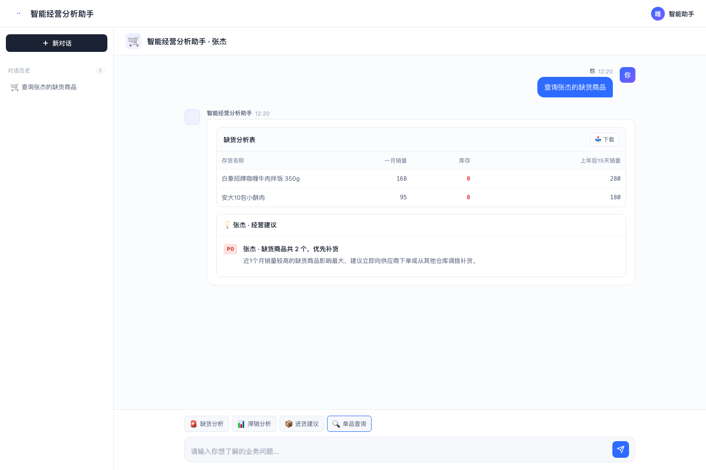

01
业务背景与痛点
某大型食品商贸企业经营多个仓库、众多商品，日常采购、销售、库存都记录在进销存系统中。
虽然系统里有数据，但采购和管理人员仍然需要定期导出报表，用Excel自己统计、计算，才能知道哪些商品快缺货、哪些商品可能积压，以及哪些商品需要安排进货。
1
数据分析靠人工
库存、销量数据要导出Excel自己整理计算，重复劳动多。
2
风险发现不及时
哪些商品快缺货、哪些商品卖不动，需要人工主动去查，容易发现得晚。
3
进货决策凭经验
先关注哪些商品、哪些需要补货，主要靠采购人员自己分析和判断。
02
AI数字员工解决方案
基于企业现有的进销存数据搭建，业务人员直接提问即可。
1
直接提问
按人员、商品查询
→
2
自动分析数据
库存、销量、周转
→
3
找出经营问题
缺货、滞销、库存不足
→
4
给出处理建议
结果明细、进货建议
03
实际使用
一名采购人员，如何快速找到需要优先处理的缺货商品？
1发起查询
采购人员直接问："查询张杰的缺货商品。"
2拿到结果
AI数字员工结合库存和近期销量，找出缺货商品，整理成一张清晰的明细表。
3给出建议
AI数字员工提示哪些商品需要优先关注，帮助采购人员判断下一步补货安排。

04
应用价值
| 原来的工作方式 | 用了AI数字员工之后 |
|---|---|
| 定期人工导出多张报表 | ✓直接提问，就能查询相关数据 |
| 人工计算库存周转情况 | ✓AI数字员工自动计算，结果更容易查看 |
| 人工逐个筛查缺货、滞销商品 | ✓根据业务规则快速找出相关商品 |
| 人工整理进货关注清单 | ✓直接得到分析明细和处理建议 |